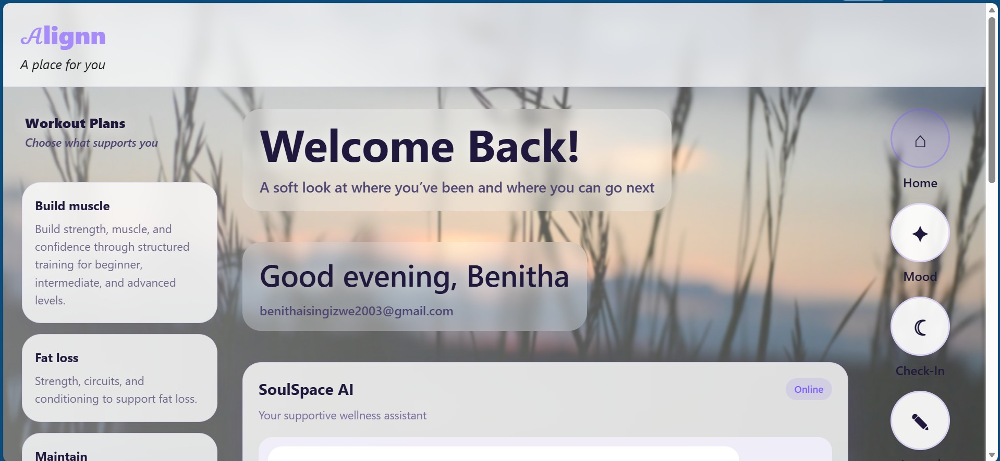
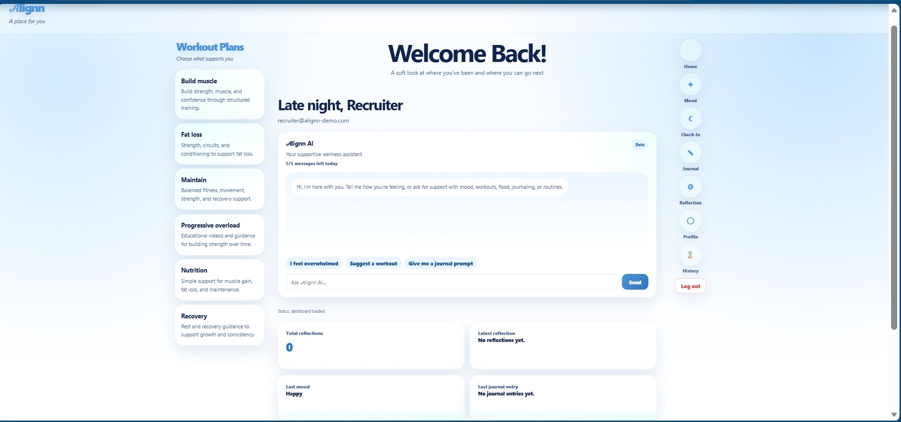

Independent product · 2025–present
𝒜lignn
A full-stack wellness platform connecting mental wellness, physical wellness, nutrition, recovery, and personalized support in one product.
- HTML
- CSS
- JavaScript
- Supabase
- Vercel
// problem
Built from firsthand experience with how inaccessible affordable mental health support can be, and from discovering how much physical movement can support emotional wellbeing — I wanted to build something that treats mind and body as connected, not separate.
// research & iteration
Early versions used individualized image and video backgrounds across different pages. Feedback revealed that the changing visuals could make the experience feel more emotionally intense and less cohesive than intended. I used that feedback to move toward a unified light-blue visual system, calmer surfaces, clearer hierarchy, and more consistent navigation.
The redesign process reinforced that interface choices are not only decorative: color, density, consistency, and language influence how a user interprets the purpose and emotional tone of a product.

SoulSpace's origibak dashboard — before the shift to a unified, calmer visual system.

A unified light-blue system created a calmer experience, clearer hierarchy, more consistent navigation, and a stronger connection between each area of the platform.
// architecture
The production data model currently contains 13 tables, 94 columns, and 7 foreign-key relationships. Supabase supports authentication, session handling, protected user access, and database integration, while the front end is built with HTML, CSS, and JavaScript and deployed through Vercel.
Phase 1 included registration, login, logout, forgot-password and reset flows, token and session handling, protected routes, profile updates, account management, a personalized dashboard, activity history, mood tracking, journaling and reflection tools, fitness and nutrition resources, recovery content, educational videos, responsive layouts, and improved navigation.
// what I learned
Building Alignn required learning while shipping: debugging authentication, working through deployment and caching issues, organizing a large amount of educational content, and continuously deciding what should be built now versus later. It strengthened my technical troubleshooting, product judgment, and ability to translate feedback into concrete interface changes.